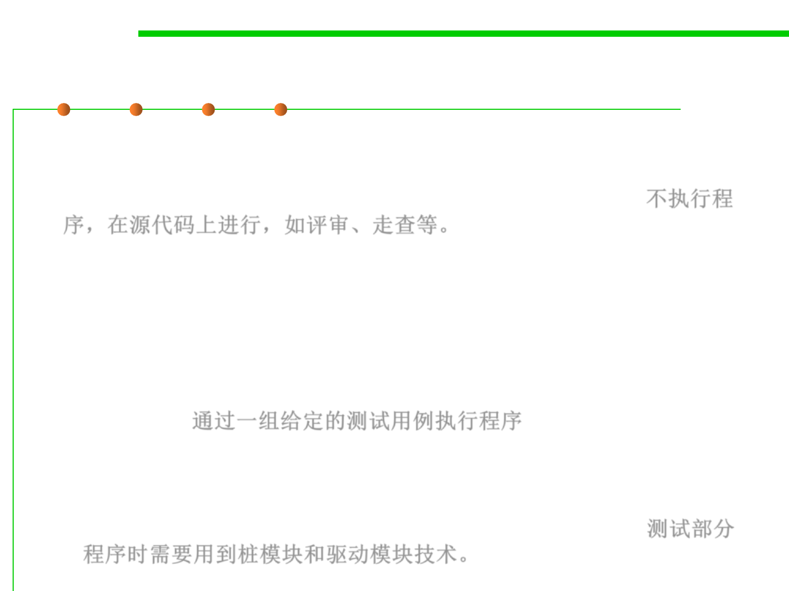

Static vs. Dynamic testing
7.5 Testing and Test-First Programming
▪ Static testing is performed without actually executing programs, in
most cases the testing is performed on some version of the source
code, and in the other cases, some form of the object code. 不执行程
序，在源代码上进行，如评审、走查等。
– Static testing is often implicit, as proofreading, plus when programming
tools/text editors check source code structure or compilers (pre-compilers)
check syntax and data flow as static program analysis. Reviews,
walkthroughs, or inspections are referred to as static testing. See 2.2
▪ Dynamic testing describes the testing of the dynamic behavior of
code, which actually executes programmed code with a given set
of test cases. 通过一组给定的测试用例执行程序
– Dynamic testing may begin before the program is 100% complete in order
to test particular sections of code and are applied to discrete functions or
modules. Typical techniques for this are either using stubs(桩模块
)/drivers(驱动模块) or execution from a debugger environment. 测试部分
程序时需要用到桩模块和驱动模块技术。